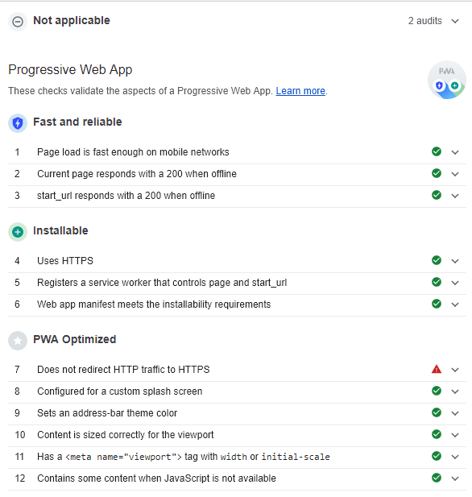

PWA est une abbréviation pour "Progressive Web App", on pourrait croire au premier abord que ce site est un site banal.
Cependant, la particularité de ce dernier est, qu'une fois accédé via un appareil mobile sous Android ou iOS, un message apparait nous demandant si l'on désire installer le site sur votre appareil !
Si vous acceptez, le site viendra s'installer sur votre appareil et sera disponible de la même manière qu'une application téléchargée sur le store de votre appareil !
Ce site sera disponible hors ligne et stocké dans la mémoire de votre appareil ! Le rendant beaucoup accessible si vous consultez régulièrement !
Le terme PWA est assez jeune puisqu'il date de 2015.
C'est un ingénieur de Google qui proposa ce terme pour désigner ce genre de site web
Il existait donc des PWA avant même que le terme existe, cependant, elles étaient très rares et la démocratisation se fit une fois la chose nommée
Si une PWA est construite correctement, alors, par définition, elle promet les choses suivantes :
La plupart de ces caractéristiques sont vérifiables avec Google Chrome, ce dernier possédant un outil vérifiant si le site est bien une PWA
Pour y accéder :
Après tout cela, votre navigateur lancera une série de tests, et vous communiquera les résultats du site quelques instants plus tard
Ci-dessous l'audit du site sur lequel vous êtes actuellement !
Vous pouvez voir que ce site en presque parfait en tant que PWA, le seul point n'étant pas au vert est que notre PWA ne redirige pas le traffic HTTP vers de l'HTTPS, chose impossible sans certificat officiel